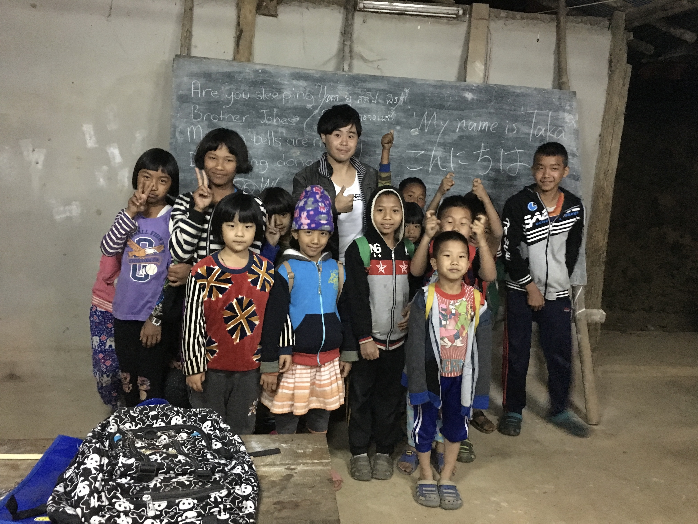
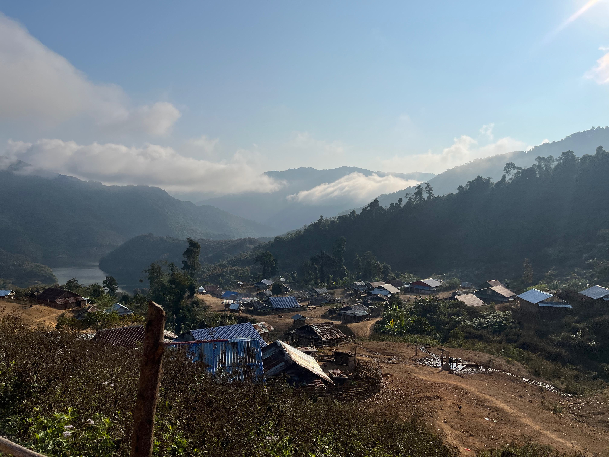
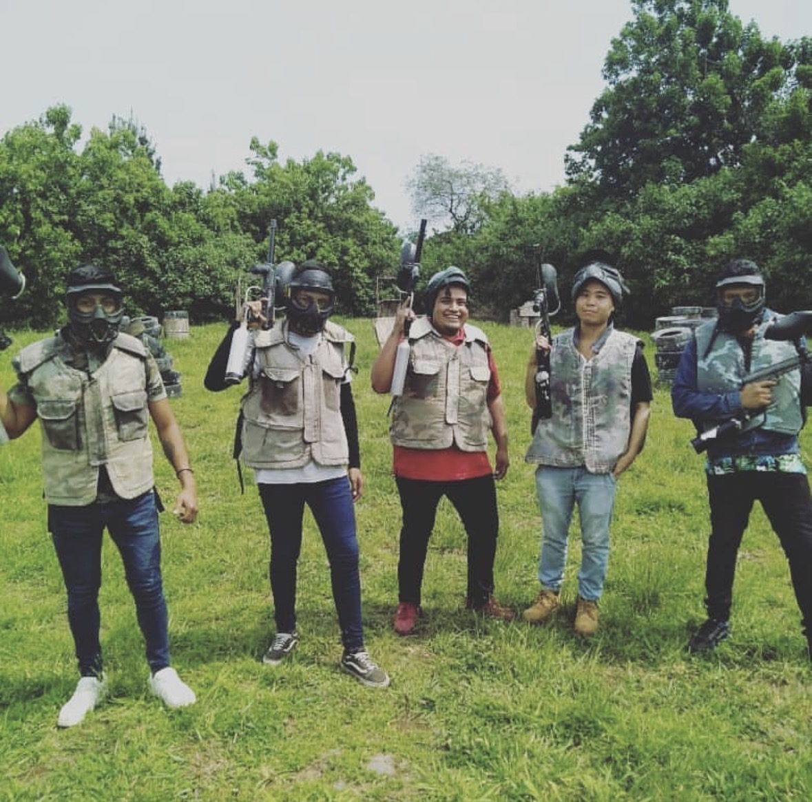

道に迷ったら、
景色がはじまった。
地図を閉じたら、
世界がひろがった。
When I got lost, the scenery began.
When I closed the map, the world opened up.
"Where are you going?"
——どこに向かってるの？
あたらしい町につくたびに、きかれる質問。
でも、ぼくの答えはいつも "I don't know"——わかんない。
行き先はない。宿もきめてない。
今日なにを食べるかさえ、まだわからない。
気づいたら、地図をとじていた。
バスターミナルで飛びかう声をよそに、
とりあえず、どこかへ歩き出す。
迷う。バスを逃す。丸一日、何もすすまない。
それでいい。
遠回りしたぶんだけ、景色が増えた。
乗り間違えたぶんだけ、知らない人と話せた。
調べなかったぶんだけ、驚きがあった。
だから、たぶん。
旅は効率が悪いほうがおもしろい。
バスを逃したあの日の屋台、
まだずっとどこかにある。

AREA CLEAR — tap to explore
Intoxicated. Adrift. Wandering.
あらすじのない旅

高校の友達に誘われてインドへ。ドロまみれの道で、車もウシも人も三輪タクシーも好き勝手に行き交う。ガンジス川に着く頃には、自分の常識の方が流されていた。
A high school friend dragged me to India. Muddy roads, cows, rickshaws, people — all doing their own thing. By the time I reached the Ganges, it wasn't the river washing things away. It was me.
英語と、スパゲッティと、青春。サンフランシスコの半年。
English, pasta, and something that felt like youth. Six months in San Francisco.
中国語ペラペラの白人2人と仲良くなり、俺だけ中国語が話せないアジア人になった。その日から中国語を始める。
Two white guys spoke perfect Mandarin. I didn't. That stung. Started studying that night.
Went to Taiwan once. Then again. Then five more times.
Travel · Taiwanゲストハウスで知り合った人たちと麻辣火鍋と麻雀。こういう旅がしたかった。
Strangers at a guesthouse. Hotpot, mahjong, and more warmth than I expected.
何をしていたのかよくわからない。でも楽しかった。
Crossed the border just to turn around. Repeated until it stopped making sense.
夏でも涼しくて、どこまでも広くて、スケールが違った。北海道は異文化だった。
Same passport, different world. Hokkaido didn't feel like Japan.
メキシコ・オアハカ。カラフルでのほほんとした街。山に行こうとしたら止められた。
Tacos and chocolate every day in Oaxaca. Tried to hike into the hills. Was warned about bandits.
友達の結婚式に出席。インドネシア語で詩みたいなやつを読み上げた。意味はわからなかった。
Called up as best buddy at an Indonesian wedding. Delivered a speech in Indonesian. No idea what I said. Everyone cheered.
Stayed home. Built a map of Asia in Animal Crossing. That's it.
Life · Japanコロナ後、久々の海外。バイクの波に飛び込んで、やっと戻ってきた気がした。
First trip post-COVID. Dodged motorbikes in Hanoi. Felt alive again.
コックスバザールのミャンマー料理屋で知り合った家族と、ロヒンギャキャンプへ。どこまでも続いていた。
A family I met at a Myanmar restaurant took me to a Rohingya camp. It went on and on.
ラオス北部の山奥、雲の上の村。アカ族の集落に数日滞在した。水なし、電気なし、電波なし。雲海が毎朝見えた。夜、竹筒の煙を吸い、赤いスープと名前のわからない植物を食べた。なんにもないのに、なんかあった。
A village above the clouds in northern Laos. No water, no electricity, no signal. Sea of clouds every morning. Bamboo pipe smoke, red soup, unidentified plants. Nothing there, but something was.
Bounced between Laos and Thailand until I lost count. Always covered in dust.
Travel · Thailand · Laos次の国、次の言葉、次の物語。
Next country. Next language. Next story. To be continued.
Writing / エッセイ
ラオスの農家の食卓。仲間になる方法はシンプルかもしれない。
Eating together at a Laotian farmhouse table.
ラオスの畑で聞かれたひとこと。言葉と旅のエッセイ。
"Does Japan have rainbows too?" — a question from a field.
ラオスの畑でカエルに出会い、「分かる」は「分ける」から来ると気づく。言葉が世界の見え方を変える。
Language sharpens the resolution of the world.
同じ綴り "Caesar" なのに発音が違う理由。英語の「C」の謎を言語学的に解説。
Why "Caesar" sounds different in Latin and English.
Music / 音楽
Globe / 足跡
